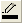

und FüllfarbeSobald Sie eine Zeichnung mit aktivierten Beschriftungen erstellt haben, wie bei dem Diagramm einer Zeitleiste, möchten Sie vielleicht eine Rahmenlinie um die Datenbeschriftungen herum hinzufügen. Ihnen wird empfohlen, die folgenden Schritte zu befolgen:

und FüllfarbeDrücken Sie die Strg-Taste und klicken Sie doppelt auf einen der Datenpunkte, um den Dialog Details Zeichnung zu öffnen. Es wird ein spezieller Punkt hinzugefügt. Wenn dieser spezielle Punkt im linken Bedienfeld ausgewählt ist, wechseln Sie zur Registerkarte Beschriftung. Die vier oben erwähnten Optionen, Rahmen, Rahmenfarbe, Füllfarbe und Rand (% Schrifthöhe), sind standardmäßig auf Auto gesetzt. Dies bedeutet, dass die Einstellungen dieses speziellen Punkts den Einstellungen der gesamten Zeichnung folgen. Sie können diese Optionen nach Ihren eigenen Wünschen benutzerdefiniert anpassen.
Schlüsselwörter:Rahmenlinie, Datenbeschriftung, Rahmen, Box, Schatten
Letztes Update: 08.01.2019